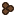
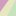

Internet Nook #91a1e243
Projects
Escape Room Namer
(2019-05-22)
Kendall Stories 2.0
(2019-02-23)
Mr. Floppypants
(2018-08-30)
TheField
[Field-of-view algorithm] (2018-02-22)
Fantasy Forest
[Twine story by Kendall] (2018-01-07)

Mancalamity
[Mancala game with computer opponents] (2017-11-23)
Pikmin-like game prototype
(2017-10-11)
SporkFeed
[command-line rss/atom feed reader] (2017-09-14)
Tower of Hanoi Variations
(2017-07-12)
Hilbert Music
[experimenting with Hilbert Curves and musical notes] (2017-06-20)
BlockFractal
[Generator of blocky fractal-like shapes] (2017-06-01)
WarpField
[Field-of-view algorithm with portals] (2017-05-27)
Columnar and Relational Database Structures
[Presentation] (2017-05-20)
WallyFOV
[Field-of-view algorithm] (2017-05-13)
Kendall Stories 1-3
(2016-12-18)
Word Search Generator
(2016-11-27)
Mr. Floppypants (Old)
(2016-11-20)
Maze generator demo
(2016-10-14)
Probably Puzzles (Hidato, Nonogram, Shikaku)
(2016-08-27)
Probably Puzzles (Numbrix)
(2016-08-21)
It's EELectric! (Junior)
(2016-08-15)
Mu Keyboard Demo
[Browser demo of piano keyboard test for a music library] (2016-07-24)
It's EELectric!
[Original eel puzzle game] (2016-07-18)
Hexfold
[Hexagonal path-building puzzle game based on Cool Circuits] (2016-05-10)
Hexfold Solver
(2016-05-05)
Cool Circuits Solver
(2016-04-25)
Logoplex
[Logo quiz] (2016-04-10)
Dimensional Insight Logo Animation
(2016-04-02)

The Sillifier
[Randomly replaces words using similar parts of speech] (2016-03-27)
Robot Quest
[Dungeon crawler for kids] (2016-03-05)
Walk Across Some Dungeons
and
bonus levels
(
solution
) [Minimalistic dungeon crawler] (2014-01)
Callooh Callay, World!
(
solution
) [Esoteric language puzzle] (2014-01)
Links
Blogger
Soundcloud
Google+
 Mr. Floppypants (Old) (2016-11-20)
Mr. Floppypants (Old) (2016-11-20) It's EELectric! (Junior) (2016-08-15)
It's EELectric! (Junior) (2016-08-15) Hexfold Solver (2016-05-05) Mr. Floppypants (Old) (2016-11-20) It's EELectric! (Junior) (2016-08-15) Hexfold Solver (2016-05-05)
Hexfold Solver (2016-05-05) Mr. Floppypants (Old) (2016-11-20) It's EELectric! (Junior) (2016-08-15) Hexfold Solver (2016-05-05)